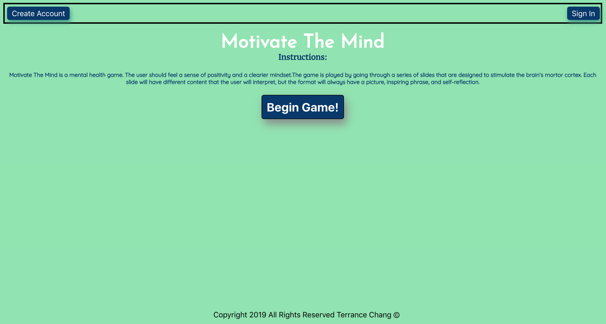

Hello, I’m Terrance Chang.
I'm a Full Stack Web Developer, and I can bring value to your company by designing and implementing a custom website that your customers will enjoy.
As a web developer I embrace difficult coding problems, and whether working within a team or working indivdually the knowledge to gain by solving diffucult problem will further advance my software develop career. Moreover web development presents the opportunity for me to express my design creativity in the aspect of utilizing technique such as choose the right color palette, experimenting with different fonts, and responsive design. Finally, my meticulous coding approach functionality of website design is to always optimize my code functions, use different libraries when appropriate, and secure website to prevent hacking vulnerability.
Away from my computer, I really enjoy a active lifestyle whether it be working out at the gym, walking my cat, or fixing cars. For me it’s important to find the happy medium of detoxing from technology by taking up alternative hobbies. I’m a strong believer in DIY (Do It Yourself) and a student of self-improvement by speaking with experts of multiple subject matters.
Projects
Build-It

Build-It is a search engine that helps users find information on how to complete their own DIY projects. A user can utilize the search engine to find how-to-video on building videos, and get inspired with product items to help with decorating projects. The programming languages used to build the application are HTML, CSS, JavaScript, and jQuery library. Finally in order to pull the data for the search engine, the YouTube and Etsy API were needed to return the results back to the users.
Motivate the Mind
Motivate The Mind is a mental health game design to relieve stress and anxiety. The user should feel a sense of positivity and have a clearier mindset after the game is played. The game is played by going through a series of slides that are designed to stimulate the brain's mortor cortex. The application is built on many different programming languages. The front-end is built using React, JavaScript, HTML5, and CSS3. The backend is supported by NodeJS, Express, and Postgresql. Together the frontend and backend work well together demonstrating the knowledge I have attained over my coding career.
Quiz App

Automotive Quiz is a testing application that enables service centers to test a mechanics knowledge. The application allows the user to go through a series of questions, and tells the user if their answer was right or wrong. Finally, the application brings the user to a result page where after finishing all the questions they get their results on whether they passed the test. Utilization of this application can be a supplemental feature during the interview process of hiring a potential service technician. Programming lanuages used were HTML5 and CSS to build and design the foundation of the application. Furthermore, this application functionality is supported with the implementation Javascript and JQuery library, making for a interactive and responsive application.